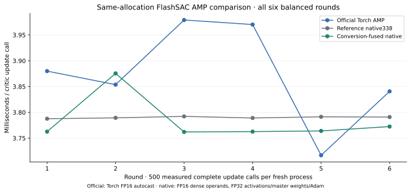
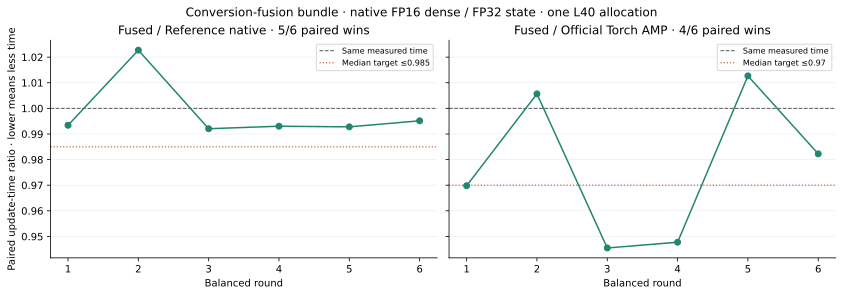
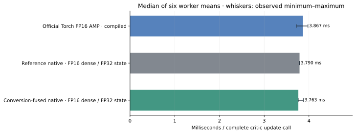

FlashSAC conversion-fusion bundle
Abstract
Primary · fused / reference native: median paired ratio 0.9932, or 0.68% less update time, with 5/6 paired wins. The predeclared target was not met. Secondary · fused / official Torch AMP: median paired ratio 0.9760, or 2.40% less update time, with 4/6 paired wins. The predeclared target was not met.
All six rounds remain visible, including target misses. These are execution measurements with synthetic inputs; no policy learning or walking quality is measured.
Companion balanced four-recipe report. This supplemental study measures its three recipes anew on one allocation; it does not pool their observations with another allocation.
1 · Controlled source comparison
The native reference and candidate differ in exactly six frozen files implementing one conversion-fusion bundle and its diagnostics. BatchNorm retains its FP32 outputs and adjoints while also producing the exact rounded FP16 inputs/output-gradients consumed by the adjoining dense layers. This removes separate conversion launches on selected private paths. Networks, losses, master parameters and optimizer state are preserved. The control addresses the bundle under this setup; it does not isolate forward versus backward fusion or eliminate clock/order noise.
The official row is pristine FlashSAC using compiled Torch FP16 AMP with the authors’ TF32/high policy. Native uses FP16 dense operands with FP32 accumulation, activations, master weights and Adam; Torch autocast rounds more intermediates. The native-versus-official comparison therefore includes execution and precision-path differences. Autotuning is disabled in both native variants. The timing fixture has no terminals or timeouts, so it does not compare those environment semantics.
All six permutations of the three recipes were shuffled with seed 41 before execution. Every recipe occupies each position twice; every directed immediate predecessor occurs twice within rounds. Cross-round boundary transitions are not separately balanced. Each worker is a fresh process/learner with empty Adam/scaler/counter state, the same 89 canonical state arrays and bit-identical transition fixture.
| Engineering target | Paired wins | Median time ratio | Maximum median ratio | Outcome |
|---|---|---|---|---|
| Primary · fused / reference native | 5/6 | 0.9932 | 0.985 | Not met |
| Secondary · fused / official Torch AMP | 4/6 | 0.9760 | 0.97 | Not met |
Both thresholds were frozen before execution: 6/6 paired wins, with median fused/reference time ≤0.985 for the primary comparison and fused/official time ≤0.97 for the secondary comparison. A target miss remains a valid measured outcome. Six rounds on one allocation are descriptive timing repetitions, not independent training seeds, allocations, confidence intervals or a universal-speed result.
2 · All measured rounds



| Recipe / precision | Median (ms/call) | Round range (ms) | Completed C / A / T | Skipped C / A / T |
|---|---|---|---|---|
| Official Torch FP16 AMP · compiled | 3.867 | 3.717–3.979 | 3,000 / 1,500 / 1,500 | 0 / 0 / 0 |
| Reference native · FP16 dense / FP32 state | 3.790 | 3.788–3.792 | 3,000 / 1,500 / 1,500 | 0 / 0 / 0 |
| Conversion-fused native · FP16 dense / FP32 state | 3.763 | 3.762–3.876 | 3,000 / 1,500 / 1,500 | 0 / 0 / 0 |
Complete update timing includes replay sampling, reward scaling, optimizer work, projections, target EMA and default per-call CPU scalar metrics (7 on actor phases, 2 on critic-only phases). Physics and rollout collection are absent. Public action API timing, which copies actions to a CPU NumPy array, is recorded separately and excluded from these update figures.
3 · Startup, warmup and clock context
The candidate’s 16-stage focused diagnostic runs first. One preconditioning process per recipe then runs in official/reference/candidate order, followed by 18 balanced measurement processes. Compiler caches persist across workers, so these are ordered shared-cache costs, not independent cold starts. All processes preserve fresh optimizer/scaler state before equal warmup.
Excluded preconditioning · all three outcomes retained
| Recipe | Setup excluding warmup (s) | Warmup (s) | Whole worker wall (s) |
|---|---|---|---|
| Official Torch AMP | 34.970 | 411.079 | 462.143 |
| Reference native338 | 6.854 | 0.426 | 40.953 |
| Conversion-fused native | 1.287 | 0.426 | 33.548 |
Measurement processes · medians over six rounds
| Recipe | Setup excluding warmup (s) | Warmup (s) | Whole worker wall (s) |
|---|---|---|---|
| Official Torch AMP | 16.701 | 7.600 | 39.406 |
| Reference native338 | 1.318 | 0.428 | 33.492 |
| Conversion-fused native | 1.348 | 0.426 | 33.471 |
The complete controller protocol took 20.49 minutes, including the candidate diagnostic (0.54 minutes), preconditioning, all fresh workers and controller audits/checkpoint IO; dependency/OS setup is excluded. Each worker performs 100 warmup action/update calls, 100 separately timed action calls and 500 measured updates. Per recipe, six measured workers complete 3,000/1,500/1,500 timed C/A/T updates; including warmups and its preconditioning worker, the recipe completes 4,200/2,100/2,100 updates. No AMP attempt was skipped.
| Recipe | Sampled SM clock (MHz) | Temperature (°C) | Power draw (W) | Samples |
|---|---|---|---|---|
| Official Torch AMP | 2490–2490 | 33–42 | 148–203 | 12 |
| Reference native338 | 2490–2490 | 35–44 | 159–288 | 12 |
| Conversion-fused native | 2490–2490 | 35–44 | 161–290 | 12 |
Read-only device samples lie outside update timers. They provide clock/thermal context rather than continuous monitoring or a causal decomposition of small timing changes. Clock locking was not imposed. Missing samples remain unavailable in the derived data.
4 · Numerical and artifact controls
The focused diagnostic passed all 16 stages, including forward/backward conversion equivalence, alias rejection, final accumulated adjoint rounding, frozen-parameter input gradients, graph replay, plan retention, scaler controls and full learner integration. Six learner stages preserve 12 native checkpoints and separately validate in-place reload plus captured continuation. Individual timing workers save checkpoints; they do not each perform a reload roundtrip. The independent CPU audit reopens all their payloads, checks finite updated parameters and optimizer state, and verifies exact 600/300/300 total C/A/T counters and zero skips after warmup plus measurement. Every original artifact is checked against the complete SHA inventory.
Fixture: 123 observations, 37 actions, 1,024 vector inputs, replay batch 2,048; actor width 128, critic width 256, two residual blocks, 101 categorical bins. Runtime: NVIDIA L40, Python 3.12.14, Torch 2.11.0+cu130, Warp 1.17.0, Warp-NN 0.4.1. The unchanged official standalone learner runs outside its declared Python <3.12 support matrix. Prepared native graph buffers and plans remain tied to their original device.
Frozen sources: reference 33870ab06794, conversion-fusion candidate e105370268a5, and pristine official 87edc9061150. FlashSAC architecture, losses and algorithm credit belong to the FlashSAC paper and authors; see RoboLearn attribution and licenses. This supplement measures execution only.
Sanitized derived data and evidence hashes · Report checksums. Original JSON/checkpoints remain preserved separately. Public data excludes local paths, internal hosts and GPU UUIDs.